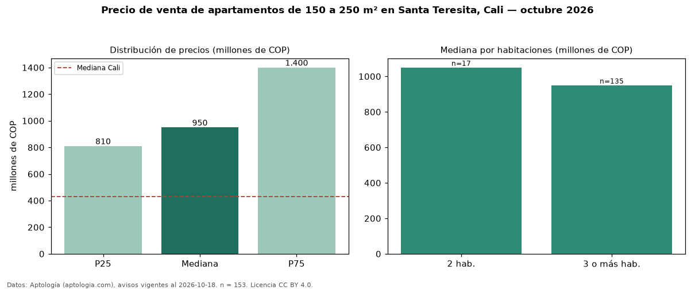

Precio de venta de apartamentos de 150 a 250 m² en Santa Teresita, Cali — octubre 2026
Con 153 avisos vigentes, el precio mediano de apartamentos de 150 a 250 m² en venta en Santa Teresita, Cali es COP 950 millones. Prácticamente coincide con la mediana de todos los apartamentos en venta de Santa Teresita (COP 950 millones, n = 365); este segmento reúne el 42 % de esos avisos. Por metro cuadrado, la mediana es COP 5,33 millones/m² (n = 153), 3 % por debajo del conjunto de referencia (COP 5,47 millones/m²). El área mediana anunciada es 192 m². El segmento con más oferta es el de 3 o más habitaciones (135 avisos, mediana COP 950 millones); pasar de 2 habitaciones a 3 o más habitaciones cambia la mediana −10 %. La administración mediana declarada es COP 1,44 millones al mes (n = 133). El estrato más frecuente es 6 (88 % de los avisos con estrato). La mitad central de los avisos va de COP 810 millones a COP 1,40 mil millones (razón 1,7), una dispersión moderada. Datos: Aptología (aptologia.com), CC BY 4.0 — https://www.aptologia.com/venta/cali/santa-teresita. Archivos: PDF, CSV con las cifras y gráfica PNG.

| Avisos únicos | 153 |
|---|---|
| Percentil 25 | COP 810.000.000 |
| Mediana | COP 950.000.000 |
| Percentil 75 | COP 1.400.000.000 |
| Mediana por m² | COP 5.328.947 |
Fuente: avisos vigentes de portales inmobiliarios recopilados por Aptología, deduplicados (mínimo 30 avisos únicos por celda). Precios pedidos, no cerrados. Fecha: 2026-10-18.